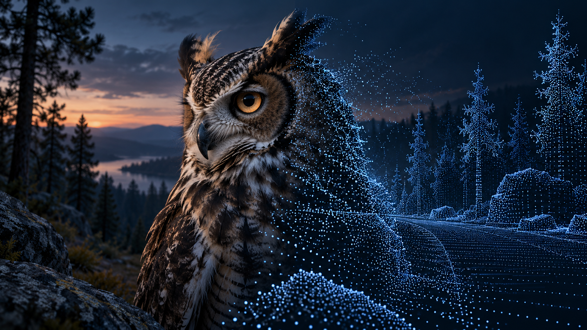

INTERACTIVE ESSAY · UMWELT
The World We Miss
A street becomes a cloud of distances. A flower carries a pattern we can't see. I built an interactive essay about what changes when you change the observer.

I wanted to understand what a self-driving car has to work with before it decides what to do. A street looks obvious in a photograph. Take away the photograph and keep only distances or motion, and it becomes a much stranger problem.
Waymo was the starting point. I wanted to separate its sensor types, look at each one, and put them back together. Then I wanted to try the same question with animals. An owl hunting at night. An eagle picking out a small detail. A bee finding a flower.
What would I notice if I had different equipment?
Take away the image
The city below is a model built for this experiment. Start with the camera, then switch to lidar. The familiar street becomes a set of measured surfaces.
AN INTERACTIVE VISUAL ESSAY
The sensor model
A car measures distance. An owl gathers light. An eagle resolves a world of detail.
Step outside your own perspective.
REAL-TIME 3D · BEST EXPLORED WITH CURIOSITY
A city, reconstructed in signals.
ILLUSTRATIVE SENSOR MODEL · NOT WAYMO TELEMETRYGeometry, light and motion share a coordinate system. The labels are illustrative ground truth, not AI predictions.
Your browser couldn’t open the 3D observatory.
The full essay is still available below. Try enabling hardware acceleration to explore the simulations.
Read the essay ↓Rotate the point cloud and look behind a building. There are gaps where the sensor couldn't see. You can move your viewpoint, but you can't recover a measurement that was never taken. An empty patch of the display doesn't tell you that the street behind it is empty.
Radar adds a different wrinkle. Change the cyclist from crossing the street to approaching the sensor. The readout measures motion toward or away from the sensor, so movement across its view can register very differently. Speed depends on which direction you're measuring.
Combining the views helps explain why a car carries several kinds of sensor. Colour, distance and motion answer different questions about the same encounter.
Better vision for what?
With animals, I kept coming back to that question. Seeing a faint shape at night and separating two tiny details in daylight are different abilities. So is detecting a wavelength that human eyes miss altogether.
The woodland lets you explore those differences. Start with the great horned owl and lower the available light. Then try the eagle's distant stripes, the bee's flower patterns, and the pit viper's warm-body signal. The viper senses that heat through facial pits, separate from its eyes.
THE PERCEPTION ATLAS
Four capabilities.
One woodland.
Move the divider to compare. These are illustrations of sensory capabilities, with the limits explained below each view.
BUBO VIRGINIANUS
The night is not empty.
A rod-dominated retina helps the great horned owl gather information in low light. Sensitivity and fine detail are different abilities; an owl does not simply see a brighter version of our world.
Read the research ↗This experiment changes exposure, colour and noise to explain low-light sensitivity. Its settings are artistic, not measured owl thresholds.
There's a word for an animal's perceptual world: umwelt. I liked it as a name for this project because it shifts the question from how much of the world you see to which parts are available to you.
That's also why I wanted this to be interactive. A point cloud is easy to glance at. Turning it around and finding the missing side of a building gives you something to figure out. You change one thing, look again, and ask why the result is different.
I'd like to use more visuals this way in my writing: give the reader something small to investigate, then use the explanation to help them make sense of it.
About the models: The city uses simplified sensor geometry, not Waymo recordings or software. The animal views illustrate selected capabilities using authored colours and signals; they aren't calibrated reconstructions of animal vision. The methods and research notes explain the choices. Built with Three.js and a CC0 forest environment from Poly Haven.